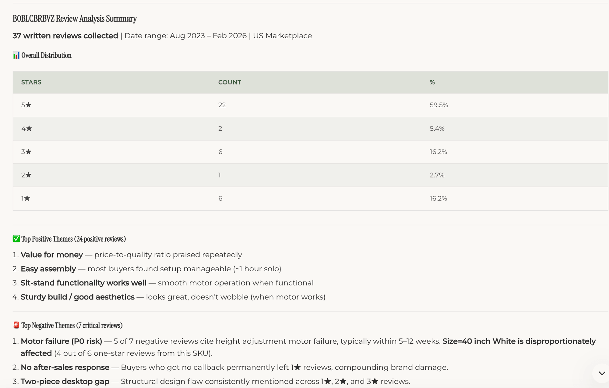
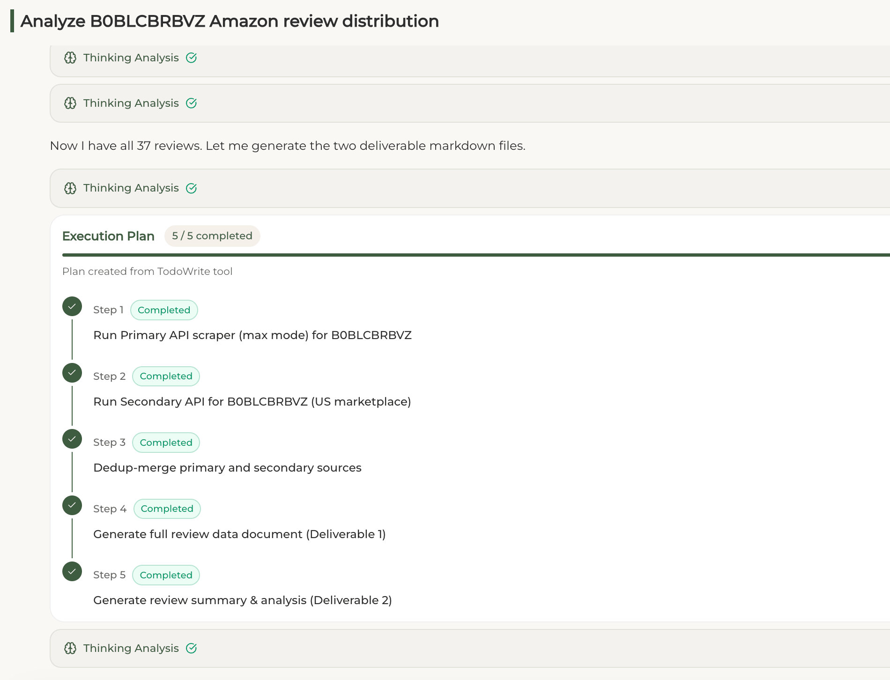
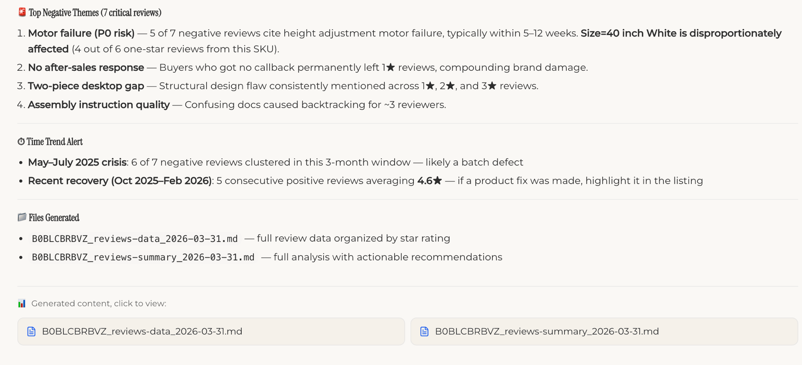

Collect the full voice.
Dual-source scraping captures written reviews with metadata, variants, verified purchase status, helpful votes, and marketplace context.
Cluster thousands of Amazon reviews into semantic themes, surface friction points, detect time-based risk windows, and turn voice-of-customer into product roadmap, listing, support, and competitive decisions.

Dual-source scraping captures written reviews with metadata, variants, verified purchase status, helpful votes, and marketplace context.
AI groups similar complaints across language and wording, so “handle wobbles” and “handle broke” become one actionable durability signal.
Outputs are structured as reviewable Markdown deliverables with P0-P3 recommendations tied back to evidence.
Where teams get stuck
Luckee is designed for operators who need decisions, not another raw export.
Hundreds of reviews across competitors become hours of copy-paste and inconsistent notes.
Different phrases can describe the same defect, fear, or buying motivation.
Batch defects, recovery windows, and launch-period issues rarely show up in simple sentiment scores.
Teams still need to decide what changes in product, listing, images, ads, or support.
Core capabilities
The local page follows the reference design: alternating capability blocks, product screenshots, and crisp operator-focused copy.


Enabled per ASIN when competitor review behavior looks suspicious.
How it works
Scrape the main review source with the selected depth mode.
Cross-check marketplace coverage and fill missing review data.
Normalize metadata and remove duplicates across sources.
Create the full review corpus deliverable for audit and reference.
Produce themes, trends, findings, and action recommendations.
Live example
A standing desk launched in 2023. Written reviews collected, a motor failure window surfaced, and recovery evidence confirmed.
37 written reviews · US Marketplace · Dual-source coverage
Full review corpus with date, variant, VP status, helpful votes, and original text.
Deliverable 1 · MarkdownTheme tables, 3-star signals, key findings, and P0-P3 recommendations.
Deliverable 2 · MarkdownUse cases
Run multiple ASINs and build a deduplicated, star-grouped corpus in minutes.
Rank product defects by frequency, severity, and whether the issue is category-wide.
Analyze German, Japanese, French, or US feedback before entering a new market.
Convert VOC evidence into listing, image, product, support, and ad recommendations.
Quantify review-rate spikes and generate an evidence-backed complaint draft.
Find persistent category complaints that can become product differentiation.
Comparison
Common questions
Coverage depends on marketplace and available written reviews. Luckee focuses on written review text because star-only votes cannot be interpreted as customer evidence.
Yes. The analysis is designed to cluster themes across different source languages and normalize them into operator-friendly findings.
A review corpus and a summary report with themes, quotes, time trends, findings, and action recommendations.
Yes. Markdown deliverables can move into Notion, Linear, Slack, docs, or any operating workspace your team already uses.
Run Review Analysis on one ASIN and see what customer evidence says your team should fix next.
Get Started